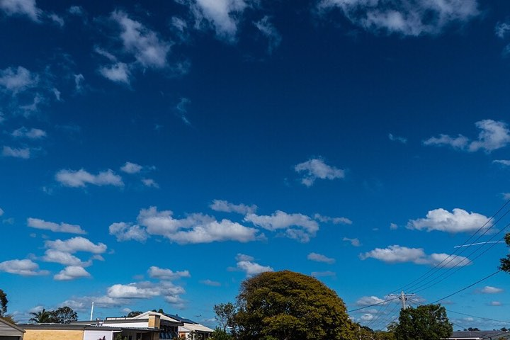
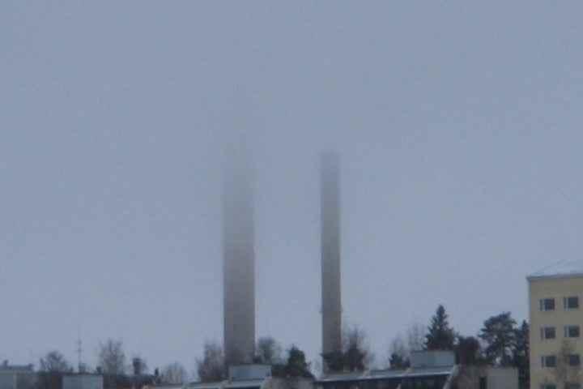
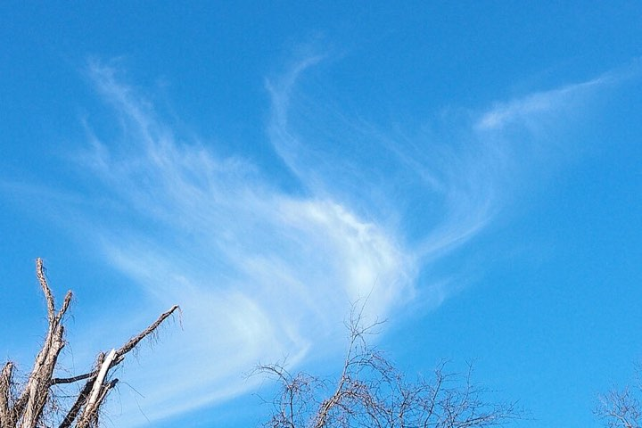
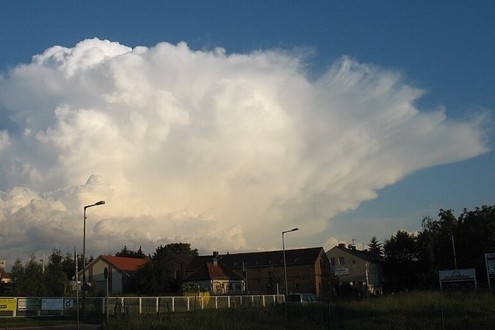

How clouds are made
Every cloud starts as water on the ground. The sun does most of the work. Here is the trip a drop of water takes.
From puddle to cloud
-
The sun warms water
Seas, lakes and puddles get warm. Some water turns into a gas you cannot see, called water vapour. This is evaporation.
-
Warm air rises
Warm air goes up and carries the vapour with it. The higher it goes, the colder the air gets.
-
Tiny drops appear
In cold air the vapour turns back into tiny drops around specks of dust, salt or smoke. This is condensation. Billions of drops make a cloud.
-
Rain falls
The drops bump together and grow. When they are too heavy to float, they fall as rain, or as snow when it is cold enough.
Four clouds to spot

Cumulus
Low in the sky
Its name means "heap". Puffy clouds with flat bottoms, like cotton wool. They often mean a nice day.

Stratus
Low, sometimes on the ground
Its name means "spread out". A flat grey blanket that can bring drizzle. Fog is a stratus cloud that touches the ground.

Cirrus
Very high, more than 5 km up
Its name means "curl of hair". Thin wisps so high and cold that they are made of ice, not water.

Cumulonimbus
From low to very high
The storm cloud. It can grow taller than Mount Everest and brings thunder, lightning, heavy rain and hail.
The tools on our roof
| Tool | What it measures |
|---|---|
| Thermometer | How warm or cold the air is |
| Rain gauge | How much rain has fallen |
| Anemometer | How fast the wind blows |
| Wind vane | Where the wind comes from |
| Barometer | How hard the air presses down |
| Hygrometer | How full of water vapour the air is |
Cloud quiz
Think of your answer first, then click the question to check.
What is a cloud made of?
Billions of tiny drops of water, or tiny bits of ice, floating in the air.
Water is heavy. Why does a cloud not fall down?
Cloud drops are much smaller than rain drops. They are so light that rising air holds them up.
Which cloud brings thunder and lightning?
The cumulonimbus, the tall storm cloud.
What is fog?
A stratus cloud that sits on the ground. Walking in fog is walking inside a cloud!
Why do rain clouds look grey?
They are thick and full of water, so less sunlight gets through them. From below, they look dark.